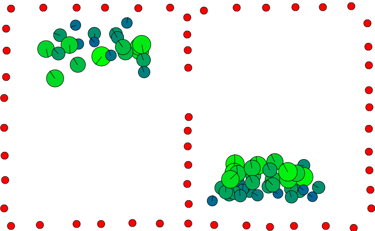
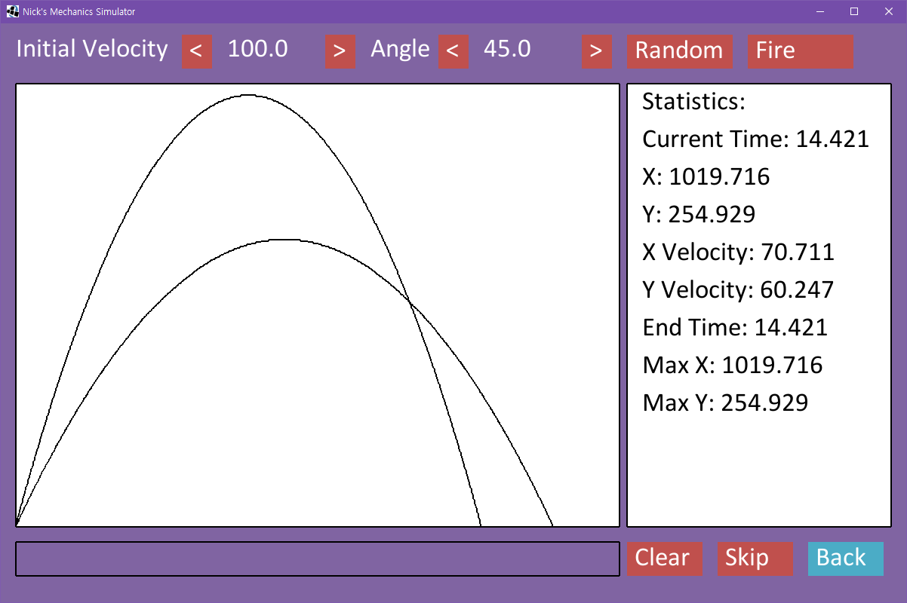

Projects
Boids Flocking Simulation (Runs in Browser)
An interactive simulation of flocking behaviour and obstacle avoidance using p5.js.
Chip-8 Emulator

My first attempt at writing a virtual machine. It is written in C++ using SFML.
ASCII Fractal Generator

A renderer of the mandelbrot set that runs in the console. Soon to be rewritten.
Mechanics Simulator
My final year project for college. It is written in Java and has an android and desktop version.
2D Sidescroller in C++

A 2D side-scrolling game made in C++ at the start of my second year of university. It uses a bare-bones engine created by Chris Rook.